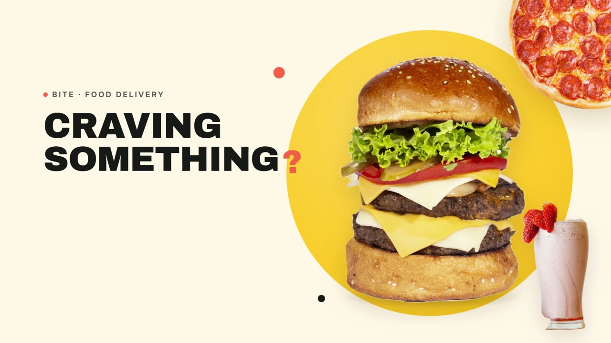
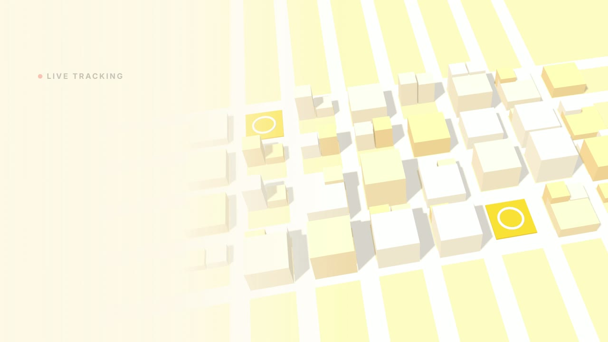
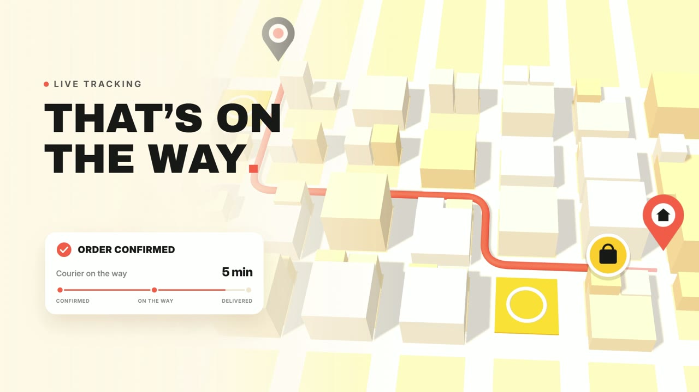
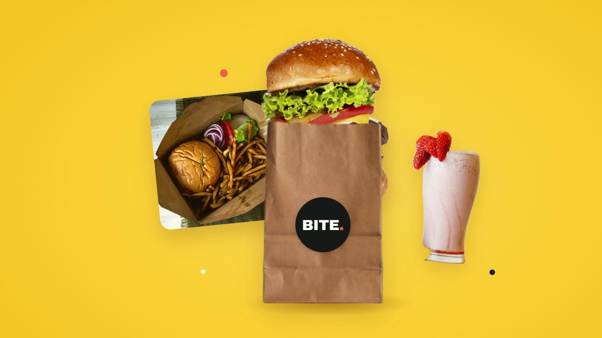

“Your cravings. Your call.” A narrated launch ad for an invented food delivery app: the craving, the order, live tracking on a 3D city map, and the knock at the door.
Format18s · 9:16 + 15s · 16:9
RoleScript, design, animation, voiceover, sound
BriefSelf-initiated
Year2026
Original cut · 16:9Voiceover cut · 9:16
The brief
Make the waiting part of food delivery, the live tracking, feel exciting, using stock food photos instead of a shoot. Bright cream and yellow, food never on a dark background, captions timed to every phrase of the voiceover.
My role
Script, design, animation, voiceover, sound.
Tools
Made in code: HTML, GSAP and Three.js, frame-by-frame render · Food photos cut out and composited · Voiceover, music ducked under the voice
Self-initiated brief: BITE is a fictional project made for this portfolio. Food photos from Unsplash (Unsplash License).
Process
Styleframes

The hook is the craving itself: one big burger and a question, readable in the first second.The app appears as the answer, with real menu UI and the food spilling out of the screen.

The 3D city map builds in, so the waiting becomes a place you can see.

The camera looks along the route, so you ride with the courier instead of watching a dot.

The payoff: the order arrives, everything you saw on the menu in one shot.The end card keeps the line short enough to read at a glance: your cravings, your call.